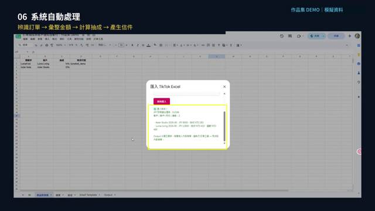

🎬 操作示範

▶跨境電商訂單抽成與客戶通知自動化
將訂單整理、匯率換算、抽成計算、信件產生與內部同步，整合為單一操作流程。
5 項分散作業 → 1 個整合流程
我的角色：需求梳理・流程設計
原本流程
人工整理訂單→查詢匯率→計算抽成→撰寫不同客戶的結算信件→更新內部表單
改善後流程
匯入訂單→系統依客戶及商品規則自動計算→產生通知信件及附件→同步內部資料
5 項分散作業 → 1 個整合流程
我的角色：需求梳理、資料結構規劃、客戶辨識規則、匯率與抽成邏輯、Email Template、測試與迭代
Google SheetsApps ScriptAutomation